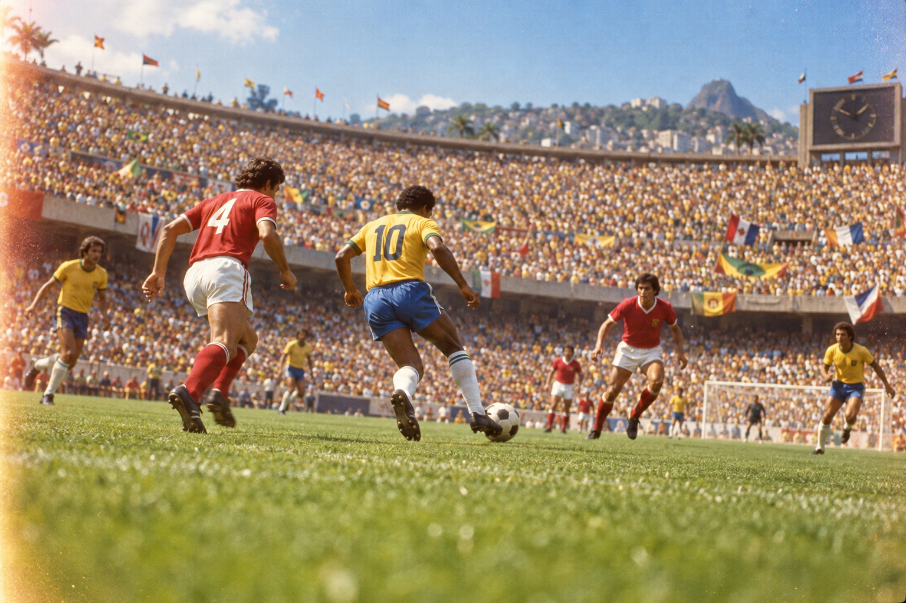

Brasil
La única selección campeona en tres continentes antes de 2006 y la primera en alcanzar cinco títulos.
El palmarés muestra una historia concentrada: solo ocho selecciones han ganado las 23 ediciones disputadas entre 1930 y 2026.
Brasil conserva el primer lugar histórico. Alemania e Italia comparten cuatro títulos; Argentina tiene tres. Francia, España y Uruguay suman dos, e Inglaterra completa el grupo con uno.
La única selección campeona en tres continentes antes de 2006 y la primera en alcanzar cinco títulos.
Dos tradiciones europeas con cuatro conquistas cada una, separadas por estilos y generaciones.
Tres títulos distribuidos en 1978, 1986 y 2022; una historia marcada por finales memorables.
Del primer título en 2010 a la segunda estrella en 2026, tras vencer a Argentina en la prórroga.
Cada título reúne un contexto: sistemas de juego, generaciones, presiones locales y maneras distintas de entender el fútbol. Comparar campeones permite leer la evolución del deporte sin reducirla a una sola figura.
